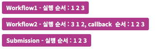
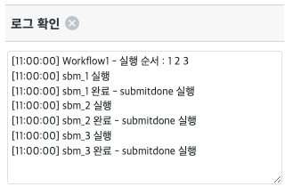
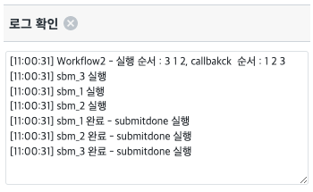
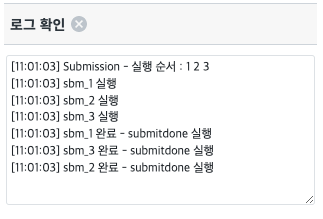
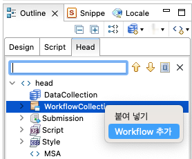
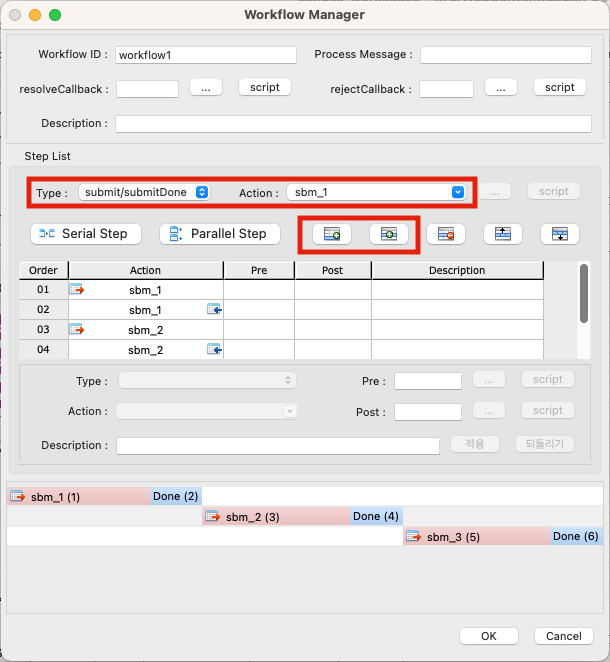
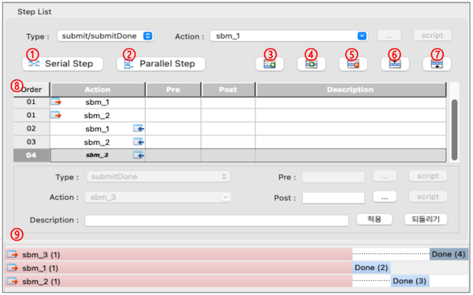

Workflow를 이용한 다건 통신 예제입니다. Workflow는 직관적인 GUI를 통해 다수의 복잡한 비동기 통신을 쉽게 호출할 수 있는 기능입니다. 사용자는 각 비동기 호출의 결과에 대한 처리 로직만 간단히 구현하면 됩니다. 정의된 submission과 submission callback 함수의 실행 순서를 보장할 수 있습니다.
workflow로 통신을 순서대로 호출해 순서대로 호출 확인
workflow로 통신과 callback 함수 순서를 변경해 순서 보장 확인
일반 submission을 연속으로 호출해 workflow와 차이 확인
공통적으로 submission 1, 2, 3은 실행 전 함수인 submit_done과 submit을 포함하고 있습니다. 그리고 함수가 시작될 때 "로그 확인" 영역에 로그를 출력합니다.
Workflow1 - 실행 순서 : 1 2 3
submission과 callback 함수를 쌍으로 실행해 1, 2, 3을 순서대로 실행합니다.
Workflow2 - 실행 순서 : 3 1 2, callback 순서 1 2 3
Submission을 먼저 3, 1, 2 순서대로 실행하고, callback을 1, 2, 3 순서대로 실행합니다.
Submission - 실행 순서 : 1 2 3
Workflow를 사용하지 않고 submission을 1, 2, 3 순서대로 실행합니다.
STEP 1. 각 버튼을 클릭해 Workflow 혹은 Submission을 실행합니다.
그림 1.버튼 이미지

STEP 2. 로그 영역에서 동작을 확인합니다.
그림 2.Workflow1 - 실행 순서 : 1 2 3 실행 결과

STEP 1. Workflow1 - 실행 순서 : 1 2 3
submission과 callback 함수를 쌍으로 1, 2, 3을 순서대로 실행합니다.
Workflow는 순서를 보장하기 때문에 여러번 반복적으로 실행하더라도 1, 2, 3 의 순서가 변하지 않는 것을 확인할 수 있습니다.
그림 3.Workflow1 - 실행 순서 : 1 2 3
STEP 2. Workflow2 - 실행 순서 : 3 1 2, callback 순서 1 2 3
submission을 우선 실행하고 callback 함수를 각각 순서를 지정해 실행합니다.
submission은 3 1 2 순서로, callback은 1 2 3 순서로 로그가 출력된 것을 확인할 수 있습니다.
그림 4.Workflow2 - 실행 순서 : 3 1 2, callback 순서 1 2 3

STEP 3. Submission - 실행 순서 : 1 2 3
submission을 차례로 1, 2, 3을 실행합니다.
script 상으로 순서대로 실행하기 때문에 순서가 보장되지 않습니다.
모두 같은 파일을 읽고, 로컬 파일을 읽기 때문에 순서가 유지되는 경우도 있지만 완전히 보장 할 수는 없습니다.
그림 5.Submission - 실행 순서 : 1 2 3

STEP 1. "Outline > Head" 에서 WorkflowCollection 우클릭 메뉴에서 Workflow 생성을 선택합니다.
그림 6.Workflow 생성

STEP 2. Submission 추가 하기 Workflow Manager에서 Type을 submit/submitDone으로 설정하고, Action을 추가할 submission으로 선택합니다. 선택한 다음 추가 버튼을 클릭합니다. 추가 버튼은 이미 추가된 submission이 있는 경우 각각, 마자막에 추가 혹은 선택한 submission 뒤에 추가하는 기능입니다.
그림 7.Submission 추가

STEP 3. 동작 순서 조정하기 Workflow Manager에서 Type을 submit/submitDone으로 설정하고, Action을 추가할 submission으로 선택합니다.  ➀ : 순차적인 배치. submission과 callback 함수를 순서대로 배치합니다. ex) Workflow1 - 실행 순서 : 1 2 3 ➁ : 병렬 배치. submission을 병렬로 실행하고 callback 함수 실행을 모든 submission 완료 후에 실행하도록 배치합니다. ex) Workflow2 - 실행 순서 : 3 1 2, callback 순서 1 2 3 ➂ : 추가된 submission 리스트 마지막에 submission을 추가합니다. ➃ : 리스트에서 선택된 submission 뒤에 새로운 submission을 추가합니다. ➄ : 리스트에서 선택된 submission 삭제합니다. ➅ : 리스트에서 선택된 submssion 혹은 함수의 우선 순위를 앞으로 이동합니다. ➆ : 리스트에서 선택된 submssion 혹은 함수의 우선 순위를 뒤로 이동합니다 ➇ : 현재 구성된 실행 리스트를 테이블 형태로 표시합니다. ➈ : 현재 구성된 실행 리스트를 이미지화 해서 표시합니다.
스크립트 실행
// Workflow 실행 $p.executeWorkflow("workflow1");
$p.executeWorkflow( workflowId )
$p.executeSubmission( submissionID , requestData , obj )
[웹스퀘어5 예제 가이드] Workflow 가이드
[웹스퀘어5 예제 가이드] Submission